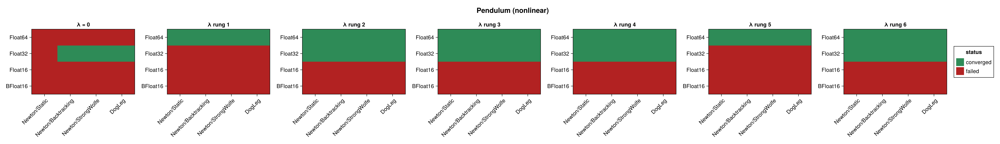
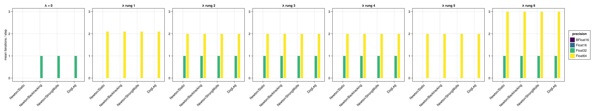
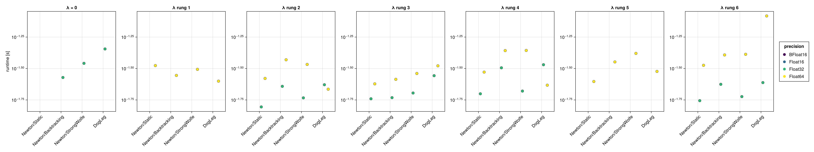
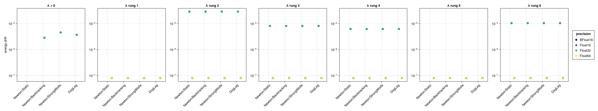
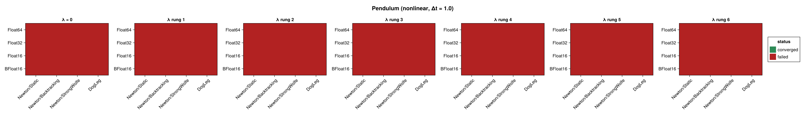
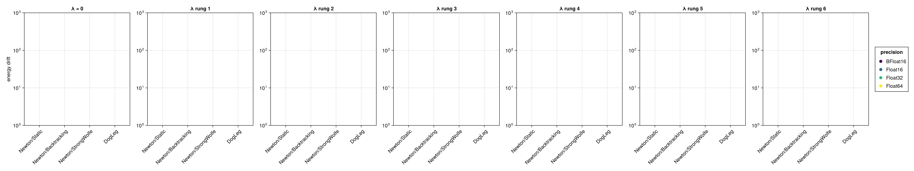

Pendulum (Nonlinear Integrator)
The mathematical pendulum benchmarked with the ShallowNet integrator (see Harmonic Oscillator (Nonlinear Integrator) for the network setup and the meaning of the regularization sweep). GeometricProblems.Pendulum provides no Lagrangian (lodeproblem) form, so its two-dimensional phase-space iodeproblem is used — the state is q = [angle, momentum], and the energy $H(\text{angle}, \text{momentum})$ is evaluated from both components. The pendulum is nonlinear, so it exercises the solves more than the harmonic oscillator. No closed-form solution is used; accuracy is assessed through the energy drift.
The figures panel by the regularization factor $\lambda$ — a rung of the $\sqrt{\varepsilon(T)}$ ladder, so one panel is a different shift at each precision; solver configurations are on the x-axis and precisions are distinguished by colour. Results are shown at $\Delta t = 0.1$ and repeated for $\Delta t = 1.0$ and $\Delta t = 10.0$ (ten steps each).
using SolverBenchmark
spec = pendulum_lode_spec(timespan = (0.0, 1.0), timestep = 0.1)
df = cached_sweep("nonlinear_pendulum_dt0.1") do
run_nonlinear_benchmark(spec; timing = :quick, max_iterations = 100,
verbose = false, quiet = true)
endConvergence
plot_convergence(df; panelcol = :regularization, title = "Pendulum (nonlinear)")
Nonlinear iterations
plot_iterations(df; panelcol = :regularization)
Run time
plot_runtime(df; panelcol = :regularization)
Energy drift
plot_energy_drift(df; panelcol = :regularization)
Discussion
- As for the harmonic oscillator, a nonzero regularization factor is required, and any rung will do. At
Float64, $\lambda = 0$ converges for no solver; every rung converges for all four, in $\approx 2.3$ iterations per step, conserving the energy to $8.05 \times 10^{-8}$ — to three significant figures the same drift at every rung, across a ladder spanning a factor of a thousand. - The pendulum's nonlinearity means the solve needs a few more iterations per step than the (linear) oscillator.
Float32converges from rung 2 up (23/28): all four solvers at rungs 2–6, but three of four at $\lambda = 0$ and none at rung 1. A rung that is worse than no regularization at all is the signature of the seed, not the solver — the OGA guess is rebuilt from the previous step's solution, so $\lambda$ perturbs the trajectory it is built from and can push a later step's Gram matrix into rank deficiency. See Harmonic Oscillator (Nonlinear Integrator) for that mechanism.- Both 16-bit formats fail at every rung (0/28 each, against 23/28 at
Float32and 24/28 atFloat64). The exception again comes from the OGA initial guess's Gram solve, not from the Newton Jacobian, soregularization_factorcannot reach it.
Results table
markdown_table(summary_table(df; panelcol = :regularization))| precision | solver_label | regularization | converged | iterations_mean | runtime_s | max_residual | at_tolerance | energy_drift |
|---|---|---|---|---|---|---|---|---|
| BFloat16 | Newton/Static | λ = 0 | ✗ | — | — | — | ✗ | — |
| BFloat16 | Newton/Static | λ rung 1 | ✗ | — | — | — | ✗ | — |
| BFloat16 | Newton/Static | λ rung 2 | ✗ | — | — | — | ✗ | — |
| BFloat16 | Newton/Static | λ rung 3 | ✗ | — | — | — | ✗ | — |
| BFloat16 | Newton/Static | λ rung 4 | ✗ | — | — | — | ✗ | — |
| BFloat16 | Newton/Static | λ rung 5 | ✗ | — | — | — | ✗ | — |
| BFloat16 | Newton/Static | λ rung 6 | ✗ | — | — | — | ✗ | — |
| BFloat16 | Newton/Backtracking | λ = 0 | ✗ | — | — | — | ✗ | — |
| BFloat16 | Newton/Backtracking | λ rung 1 | ✗ | — | — | — | ✗ | — |
| BFloat16 | Newton/Backtracking | λ rung 2 | ✗ | — | — | — | ✗ | — |
| BFloat16 | Newton/Backtracking | λ rung 3 | ✗ | — | — | — | ✗ | — |
| BFloat16 | Newton/Backtracking | λ rung 4 | ✗ | — | — | — | ✗ | — |
| BFloat16 | Newton/Backtracking | λ rung 5 | ✗ | — | — | — | ✗ | — |
| BFloat16 | Newton/Backtracking | λ rung 6 | ✗ | — | — | — | ✗ | — |
| BFloat16 | Newton/StrongWolfe | λ = 0 | ✗ | — | — | — | ✗ | — |
| BFloat16 | Newton/StrongWolfe | λ rung 1 | ✗ | — | — | — | ✗ | — |
| BFloat16 | Newton/StrongWolfe | λ rung 2 | ✗ | — | — | — | ✗ | — |
| BFloat16 | Newton/StrongWolfe | λ rung 3 | ✗ | — | — | — | ✗ | — |
| BFloat16 | Newton/StrongWolfe | λ rung 4 | ✗ | — | — | — | ✗ | — |
| BFloat16 | Newton/StrongWolfe | λ rung 5 | ✗ | — | — | — | ✗ | — |
| BFloat16 | Newton/StrongWolfe | λ rung 6 | ✗ | — | — | — | ✗ | — |
| BFloat16 | DogLeg | λ = 0 | ✗ | — | — | — | ✗ | — |
| BFloat16 | DogLeg | λ rung 1 | ✗ | — | — | — | ✗ | — |
| BFloat16 | DogLeg | λ rung 2 | ✗ | — | — | — | ✗ | — |
| BFloat16 | DogLeg | λ rung 3 | ✗ | — | — | — | ✗ | — |
| BFloat16 | DogLeg | λ rung 4 | ✗ | — | — | — | ✗ | — |
| BFloat16 | DogLeg | λ rung 5 | ✗ | — | — | — | ✗ | — |
| BFloat16 | DogLeg | λ rung 6 | ✗ | — | — | — | ✗ | — |
| Float16 | Newton/Static | λ = 0 | ✗ | — | — | — | ✗ | — |
| Float16 | Newton/Static | λ rung 1 | ✗ | — | — | — | ✗ | — |
| Float16 | Newton/Static | λ rung 2 | ✗ | — | — | — | ✗ | — |
| Float16 | Newton/Static | λ rung 3 | ✗ | — | — | — | ✗ | — |
| Float16 | Newton/Static | λ rung 4 | ✗ | — | — | — | ✗ | — |
| Float16 | Newton/Static | λ rung 5 | ✗ | — | — | — | ✗ | — |
| Float16 | Newton/Static | λ rung 6 | ✗ | — | — | — | ✗ | — |
| Float16 | Newton/Backtracking | λ = 0 | ✗ | — | — | — | ✗ | — |
| Float16 | Newton/Backtracking | λ rung 1 | ✗ | — | — | — | ✗ | — |
| Float16 | Newton/Backtracking | λ rung 2 | ✗ | — | — | — | ✗ | — |
| Float16 | Newton/Backtracking | λ rung 3 | ✗ | — | — | — | ✗ | — |
| Float16 | Newton/Backtracking | λ rung 4 | ✗ | — | — | — | ✗ | — |
| Float16 | Newton/Backtracking | λ rung 5 | ✗ | — | — | — | ✗ | — |
| Float16 | Newton/Backtracking | λ rung 6 | ✗ | — | — | — | ✗ | — |
| Float16 | Newton/StrongWolfe | λ = 0 | ✗ | — | — | — | ✗ | — |
| Float16 | Newton/StrongWolfe | λ rung 1 | ✗ | — | — | — | ✗ | — |
| Float16 | Newton/StrongWolfe | λ rung 2 | ✗ | — | — | — | ✗ | — |
| Float16 | Newton/StrongWolfe | λ rung 3 | ✗ | — | — | — | ✗ | — |
| Float16 | Newton/StrongWolfe | λ rung 4 | ✗ | — | — | — | ✗ | — |
| Float16 | Newton/StrongWolfe | λ rung 5 | ✗ | — | — | — | ✗ | — |
| Float16 | Newton/StrongWolfe | λ rung 6 | ✗ | — | — | — | ✗ | — |
| Float16 | DogLeg | λ = 0 | ✗ | — | — | — | ✗ | — |
| Float16 | DogLeg | λ rung 1 | ✗ | — | — | — | ✗ | — |
| Float16 | DogLeg | λ rung 2 | ✗ | — | — | — | ✗ | — |
| Float16 | DogLeg | λ rung 3 | ✗ | — | — | — | ✗ | — |
| Float16 | DogLeg | λ rung 4 | ✗ | — | — | — | ✗ | — |
| Float16 | DogLeg | λ rung 5 | ✗ | — | — | — | ✗ | — |
| Float16 | DogLeg | λ rung 6 | ✗ | — | — | — | ✗ | — |
| Float32 | Newton/Static | λ = 0 | ✗ | — | — | — | ✗ | — |
| Float32 | Newton/Static | λ rung 1 | ✗ | — | — | — | ✗ | — |
| Float32 | Newton/Static | λ rung 2 | ✓ | 1 | 0.0157 | 2.53e-05 | ✓ | 2.9e-05 |
| Float32 | Newton/Static | λ rung 3 | ✓ | 1 | 0.0182 | 2.6e-05 | ✓ | 8.17e-06 |
| Float32 | Newton/Static | λ rung 4 | ✓ | 1 | 0.0199 | 1.91e-05 | ✓ | 6.26e-06 |
| Float32 | Newton/Static | λ rung 5 | ✗ | — | — | — | ✗ | — |
| Float32 | Newton/Static | λ rung 6 | ✓ | 1 | 0.0175 | 2.36e-05 | ✓ | 1.05e-05 |
| Float32 | Newton/Backtracking | λ = 0 | ✓ | 1 | 0.0268 | 2.82e-05 | ✓ | 2.86e-06 |
| Float32 | Newton/Backtracking | λ rung 1 | ✗ | — | — | — | ✗ | — |
| Float32 | Newton/Backtracking | λ rung 2 | ✓ | 1 | 0.0228 | 2.53e-05 | ✓ | 2.9e-05 |
| Float32 | Newton/Backtracking | λ rung 3 | ✓ | 1 | 0.0185 | 2.6e-05 | ✓ | 8.17e-06 |
| Float32 | Newton/Backtracking | λ rung 4 | ✓ | 1 | 0.032 | 1.91e-05 | ✓ | 6.26e-06 |
| Float32 | Newton/Backtracking | λ rung 5 | ✗ | — | — | — | ✗ | — |
| Float32 | Newton/Backtracking | λ rung 6 | ✓ | 1 | 0.0237 | 2.36e-05 | ✓ | 1.05e-05 |
| Float32 | Newton/StrongWolfe | λ = 0 | ✓ | 1 | 0.0348 | 2.99e-05 | ✓ | 4.62e-06 |
| Float32 | Newton/StrongWolfe | λ rung 1 | ✗ | — | — | — | ✗ | — |
| Float32 | Newton/StrongWolfe | λ rung 2 | ✓ | 1 | 0.0185 | 2.53e-05 | ✓ | 2.9e-05 |
| Float32 | Newton/StrongWolfe | λ rung 3 | ✓ | 1 | 0.0202 | 2.6e-05 | ✓ | 8.17e-06 |
| Float32 | Newton/StrongWolfe | λ rung 4 | ✓ | 1 | 0.0209 | 1.91e-05 | ✓ | 6.26e-06 |
| Float32 | Newton/StrongWolfe | λ rung 5 | ✗ | — | — | — | ✗ | — |
| Float32 | Newton/StrongWolfe | λ rung 6 | ✓ | 1 | 0.0189 | 2.36e-05 | ✓ | 1.05e-05 |
| Float32 | DogLeg | λ = 0 | ✓ | 1 | 0.0452 | 3.01e-05 | ✓ | 3.73e-06 |
| Float32 | DogLeg | λ rung 1 | ✗ | — | — | — | ✗ | — |
| Float32 | DogLeg | λ rung 2 | ✓ | 1 | 0.0235 | 2.53e-05 | ✓ | 2.9e-05 |
| Float32 | DogLeg | λ rung 3 | ✓ | 1 | 0.0277 | 2.6e-05 | ✓ | 8.17e-06 |
| Float32 | DogLeg | λ rung 4 | ✓ | 1 | 0.0339 | 1.91e-05 | ✓ | 6.26e-06 |
| Float32 | DogLeg | λ rung 5 | ✗ | — | — | — | ✗ | — |
| Float32 | DogLeg | λ rung 6 | ✓ | 1 | 0.0244 | 2.36e-05 | ✓ | 1.05e-05 |
| Float64 | Newton/Static | λ = 0 | ✗ | — | — | — | ✗ | — |
| Float64 | Newton/Static | λ rung 1 | ✓ | 2.1 | 0.0334 | 4.04e-14 | ✓ | 8.05e-08 |
| Float64 | Newton/Static | λ rung 2 | ✓ | 2 | 0.0264 | 4.21e-14 | ✓ | 8.05e-08 |
| Float64 | Newton/Static | λ rung 3 | ✓ | 2 | 0.0239 | 3.12e-14 | ✓ | 8.05e-08 |
| Float64 | Newton/Static | λ rung 4 | ✓ | 2 | 0.0296 | 4.42e-14 | ✓ | 8.05e-08 |
| Float64 | Newton/Static | λ rung 5 | ✓ | 2 | 0.0249 | 4.9e-14 | ✓ | 8.05e-08 |
| Float64 | Newton/Static | λ rung 6 | ✓ | 3 | 0.0335 | 2.92e-14 | ✓ | 8.05e-08 |
| Float64 | Newton/Backtracking | λ = 0 | ✗ | 56 | 0.603 | 2.86e-10 | ✗ | — |
| Float64 | Newton/Backtracking | λ rung 1 | ✓ | 2.1 | 0.0279 | 4.04e-14 | ✓ | 8.05e-08 |
| Float64 | Newton/Backtracking | λ rung 2 | ✓ | 2 | 0.0371 | 4.21e-14 | ✓ | 8.05e-08 |
| Float64 | Newton/Backtracking | λ rung 3 | ✓ | 2 | 0.0259 | 3.12e-14 | ✓ | 8.05e-08 |
| Float64 | Newton/Backtracking | λ rung 4 | ✓ | 2 | 0.0439 | 4.42e-14 | ✓ | 8.05e-08 |
| Float64 | Newton/Backtracking | λ rung 5 | ✓ | 2 | 0.0357 | 4.9e-14 | ✓ | 8.05e-08 |
| Float64 | Newton/Backtracking | λ rung 6 | ✓ | 3 | 0.0405 | 2.92e-14 | ✓ | 8.05e-08 |
| Float64 | Newton/StrongWolfe | λ = 0 | ✗ | — | — | — | ✗ | — |
| Float64 | Newton/StrongWolfe | λ rung 1 | ✓ | 2.1 | 0.0311 | 4.04e-14 | ✓ | 8.05e-08 |
| Float64 | Newton/StrongWolfe | λ rung 2 | ✓ | 2 | 0.0341 | 4.21e-14 | ✓ | 8.05e-08 |
| Float64 | Newton/StrongWolfe | λ rung 3 | ✓ | 2 | 0.0289 | 3.12e-14 | ✓ | 8.05e-08 |
| Float64 | Newton/StrongWolfe | λ rung 4 | ✓ | 2 | 0.044 | 4.42e-14 | ✓ | 8.05e-08 |
| Float64 | Newton/StrongWolfe | λ rung 5 | ✓ | 2 | 0.0417 | 4.9e-14 | ✓ | 8.05e-08 |
| Float64 | Newton/StrongWolfe | λ rung 6 | ✓ | 3 | 0.041 | 2.92e-14 | ✓ | 8.05e-08 |
| Float64 | DogLeg | λ = 0 | ✗ | 20.5 | 0.759 | 3.28e-10 | ✗ | — |
| Float64 | DogLeg | λ rung 1 | ✓ | 2.1 | 0.0251 | 4.04e-14 | ✓ | 8.05e-08 |
| Float64 | DogLeg | λ rung 2 | ✓ | 2 | 0.0216 | 4.21e-14 | ✓ | 8.05e-08 |
| Float64 | DogLeg | λ rung 3 | ✓ | 2 | 0.0332 | 3.12e-14 | ✓ | 8.05e-08 |
| Float64 | DogLeg | λ rung 4 | ✓ | 2 | 0.0233 | 4.42e-14 | ✓ | 8.05e-08 |
| Float64 | DogLeg | λ rung 5 | ✓ | 2 | 0.03 | 4.9e-14 | ✓ | 8.05e-08 |
| Float64 | DogLeg | λ rung 6 | ✓ | 3 | 0.0828 | 2.92e-14 | ✓ | 8.05e-08 |
Coarse time step (Δt = 1.0)
spec1 = pendulum_lode_spec(timespan = (0.0, 10.0), timestep = 1.0)
df1 = cached_sweep("nonlinear_pendulum_dt1.0") do
run_nonlinear_benchmark(spec1; timing = :quick, max_iterations = 100,
verbose = false, quiet = true)
endplot_convergence(df1; panelcol = :regularization, title = "Pendulum (nonlinear, Δt = 1.0)")
plot_energy_drift(df1; panelcol = :regularization)
markdown_table(summary_table(df1; panelcol = :regularization))| precision | solver_label | regularization | converged | iterations_mean | runtime_s | max_residual |
|---|---|---|---|---|---|---|
| BFloat16 | Newton/Static | λ = 0 | ✗ | — | — | — |
| BFloat16 | Newton/Static | λ rung 1 | ✗ | — | — | — |
| BFloat16 | Newton/Static | λ rung 2 | ✗ | — | — | — |
| BFloat16 | Newton/Static | λ rung 3 | ✗ | — | — | — |
| BFloat16 | Newton/Static | λ rung 4 | ✗ | — | — | — |
| BFloat16 | Newton/Static | λ rung 5 | ✗ | — | — | — |
| BFloat16 | Newton/Static | λ rung 6 | ✗ | — | — | — |
| BFloat16 | Newton/Backtracking | λ = 0 | ✗ | — | — | — |
| BFloat16 | Newton/Backtracking | λ rung 1 | ✗ | — | — | — |
| BFloat16 | Newton/Backtracking | λ rung 2 | ✗ | — | — | — |
| BFloat16 | Newton/Backtracking | λ rung 3 | ✗ | — | — | — |
| BFloat16 | Newton/Backtracking | λ rung 4 | ✗ | — | — | — |
| BFloat16 | Newton/Backtracking | λ rung 5 | ✗ | — | — | — |
| BFloat16 | Newton/Backtracking | λ rung 6 | ✗ | — | — | — |
| BFloat16 | Newton/StrongWolfe | λ = 0 | ✗ | — | — | — |
| BFloat16 | Newton/StrongWolfe | λ rung 1 | ✗ | — | — | — |
| BFloat16 | Newton/StrongWolfe | λ rung 2 | ✗ | — | — | — |
| BFloat16 | Newton/StrongWolfe | λ rung 3 | ✗ | — | — | — |
| BFloat16 | Newton/StrongWolfe | λ rung 4 | ✗ | — | — | — |
| BFloat16 | Newton/StrongWolfe | λ rung 5 | ✗ | — | — | — |
| BFloat16 | Newton/StrongWolfe | λ rung 6 | ✗ | — | — | — |
| BFloat16 | DogLeg | λ = 0 | ✗ | — | — | — |
| BFloat16 | DogLeg | λ rung 1 | ✗ | — | — | — |
| BFloat16 | DogLeg | λ rung 2 | ✗ | — | — | — |
| BFloat16 | DogLeg | λ rung 3 | ✗ | — | — | — |
| BFloat16 | DogLeg | λ rung 4 | ✗ | — | — | — |
| BFloat16 | DogLeg | λ rung 5 | ✗ | — | — | — |
| BFloat16 | DogLeg | λ rung 6 | ✗ | — | — | — |
| Float16 | Newton/Static | λ = 0 | ✗ | — | — | — |
| Float16 | Newton/Static | λ rung 1 | ✗ | — | — | — |
| Float16 | Newton/Static | λ rung 2 | ✗ | — | — | — |
| Float16 | Newton/Static | λ rung 3 | ✗ | — | — | — |
| Float16 | Newton/Static | λ rung 4 | ✗ | — | — | — |
| Float16 | Newton/Static | λ rung 5 | ✗ | — | — | — |
| Float16 | Newton/Static | λ rung 6 | ✗ | — | — | — |
| Float16 | Newton/Backtracking | λ = 0 | ✗ | — | — | — |
| Float16 | Newton/Backtracking | λ rung 1 | ✗ | — | — | — |
| Float16 | Newton/Backtracking | λ rung 2 | ✗ | — | — | — |
| Float16 | Newton/Backtracking | λ rung 3 | ✗ | — | — | — |
| Float16 | Newton/Backtracking | λ rung 4 | ✗ | — | — | — |
| Float16 | Newton/Backtracking | λ rung 5 | ✗ | — | — | — |
| Float16 | Newton/Backtracking | λ rung 6 | ✗ | — | — | — |
| Float16 | Newton/StrongWolfe | λ = 0 | ✗ | — | — | — |
| Float16 | Newton/StrongWolfe | λ rung 1 | ✗ | — | — | — |
| Float16 | Newton/StrongWolfe | λ rung 2 | ✗ | — | — | — |
| Float16 | Newton/StrongWolfe | λ rung 3 | ✗ | — | — | — |
| Float16 | Newton/StrongWolfe | λ rung 4 | ✗ | — | — | — |
| Float16 | Newton/StrongWolfe | λ rung 5 | ✗ | — | — | — |
| Float16 | Newton/StrongWolfe | λ rung 6 | ✗ | — | — | — |
| Float16 | DogLeg | λ = 0 | ✗ | — | — | — |
| Float16 | DogLeg | λ rung 1 | ✗ | — | — | — |
| Float16 | DogLeg | λ rung 2 | ✗ | — | — | — |
| Float16 | DogLeg | λ rung 3 | ✗ | — | — | — |
| Float16 | DogLeg | λ rung 4 | ✗ | — | — | — |
| Float16 | DogLeg | λ rung 5 | ✗ | — | — | — |
| Float16 | DogLeg | λ rung 6 | ✗ | — | — | — |
| Float32 | Newton/Static | λ = 0 | ✗ | — | — | — |
| Float32 | Newton/Static | λ rung 1 | ✗ | — | — | — |
| Float32 | Newton/Static | λ rung 2 | ✗ | — | — | — |
| Float32 | Newton/Static | λ rung 3 | ✗ | — | — | — |
| Float32 | Newton/Static | λ rung 4 | ✗ | — | — | — |
| Float32 | Newton/Static | λ rung 5 | ✗ | — | — | — |
| Float32 | Newton/Static | λ rung 6 | ✗ | — | — | — |
| Float32 | Newton/Backtracking | λ = 0 | ✗ | — | — | — |
| Float32 | Newton/Backtracking | λ rung 1 | ✗ | — | — | — |
| Float32 | Newton/Backtracking | λ rung 2 | ✗ | — | — | — |
| Float32 | Newton/Backtracking | λ rung 3 | ✗ | — | — | — |
| Float32 | Newton/Backtracking | λ rung 4 | ✗ | — | — | — |
| Float32 | Newton/Backtracking | λ rung 5 | ✗ | — | — | — |
| Float32 | Newton/Backtracking | λ rung 6 | ✗ | — | — | — |
| Float32 | Newton/StrongWolfe | λ = 0 | ✗ | — | — | — |
| Float32 | Newton/StrongWolfe | λ rung 1 | ✗ | — | — | — |
| Float32 | Newton/StrongWolfe | λ rung 2 | ✗ | — | — | — |
| Float32 | Newton/StrongWolfe | λ rung 3 | ✗ | — | — | — |
| Float32 | Newton/StrongWolfe | λ rung 4 | ✗ | — | — | — |
| Float32 | Newton/StrongWolfe | λ rung 5 | ✗ | — | — | — |
| Float32 | Newton/StrongWolfe | λ rung 6 | ✗ | — | — | — |
| Float32 | DogLeg | λ = 0 | ✗ | — | — | — |
| Float32 | DogLeg | λ rung 1 | ✗ | — | — | — |
| Float32 | DogLeg | λ rung 2 | ✗ | — | — | — |
| Float32 | DogLeg | λ rung 3 | ✗ | — | — | — |
| Float32 | DogLeg | λ rung 4 | ✗ | — | — | — |
| Float32 | DogLeg | λ rung 5 | ✗ | — | — | — |
| Float32 | DogLeg | λ rung 6 | ✗ | — | — | — |
| Float64 | Newton/Static | λ = 0 | ✗ | — | — | — |
| Float64 | Newton/Static | λ rung 1 | ✗ | — | — | — |
| Float64 | Newton/Static | λ rung 2 | ✗ | — | — | — |
| Float64 | Newton/Static | λ rung 3 | ✗ | — | — | — |
| Float64 | Newton/Static | λ rung 4 | ✗ | 7.3 | 0.443 | Inf |
| Float64 | Newton/Static | λ rung 5 | ✗ | — | — | — |
| Float64 | Newton/Static | λ rung 6 | ✗ | — | — | — |
| Float64 | Newton/Backtracking | λ = 0 | ✗ | 73.7 | 0.458 | 0.118 |
| Float64 | Newton/Backtracking | λ rung 1 | ✗ | 43.1 | 0.231 | 0.106 |
| Float64 | Newton/Backtracking | λ rung 2 | ✗ | 33.9 | 0.173 | 0.123 |
| Float64 | Newton/Backtracking | λ rung 3 | ✗ | 38.8 | 0.171 | 0.185 |
| Float64 | Newton/Backtracking | λ rung 4 | ✗ | 40.5 | 0.214 | 0.0791 |
| Float64 | Newton/Backtracking | λ rung 5 | ✗ | 65.8 | 0.329 | 0.0828 |
| Float64 | Newton/Backtracking | λ rung 6 | ✗ | 41 | 0.208 | 0.58 |
| Float64 | Newton/StrongWolfe | λ = 0 | ✗ | 58.6 | 0.599 | 0.136 |
| Float64 | Newton/StrongWolfe | λ rung 1 | ✗ | 39.9 | 0.585 | 6.23e+150 |
| Float64 | Newton/StrongWolfe | λ rung 2 | ✗ | 50.6 | 0.495 | 0.705 |
| Float64 | Newton/StrongWolfe | λ rung 3 | ✗ | 36.2 | 0.294 | 0.0908 |
| Float64 | Newton/StrongWolfe | λ rung 4 | ✗ | 44.6 | 0.506 | 8.89e+106 |
| Float64 | Newton/StrongWolfe | λ rung 5 | ✗ | 44.2 | 0.553 | 0.289 |
| Float64 | Newton/StrongWolfe | λ rung 6 | ✗ | 47.5 | 0.352 | 0.152 |
| Float64 | DogLeg | λ = 0 | ✗ | 70.1 | 0.788 | 0.0101 |
| Float64 | DogLeg | λ rung 1 | ✗ | 59.1 | 0.167 | 0.064 |
| Float64 | DogLeg | λ rung 2 | ✗ | 45.9 | 0.159 | 0.0244 |
| Float64 | DogLeg | λ rung 3 | ✗ | 36.8 | 0.159 | 0.0217 |
| Float64 | DogLeg | λ rung 4 | ✗ | 47.3 | 0.175 | 0.0363 |
| Float64 | DogLeg | λ rung 5 | ✗ | 66.9 | 0.261 | 0.0591 |
| Float64 | DogLeg | λ rung 6 | ✗ | 53.3 | 0.159 | 0.0259 |
Large time step (Δt = 10.0)
spec10 = pendulum_lode_spec(timespan = (0.0, 100.0), timestep = 10.0)
df10 = cached_sweep("nonlinear_pendulum_dt10.0") do
run_nonlinear_benchmark(spec10; timing = :quick, max_iterations = 100,
verbose = false, quiet = true)
endplot_convergence(df10; panelcol = :regularization, title = "Pendulum (nonlinear, Δt = 10.0)")markdown_table(summary_table(df10; panelcol = :regularization))| precision | solver_label | regularization | converged | iterations_mean | runtime_s | max_residual |
|---|---|---|---|---|---|---|
| BFloat16 | Newton/Static | λ = 0 | ✗ | — | — | — |
| BFloat16 | Newton/Static | λ rung 1 | ✗ | — | — | — |
| BFloat16 | Newton/Static | λ rung 2 | ✗ | — | — | — |
| BFloat16 | Newton/Static | λ rung 3 | ✗ | — | — | — |
| BFloat16 | Newton/Static | λ rung 4 | ✗ | — | — | — |
| BFloat16 | Newton/Static | λ rung 5 | ✗ | — | — | — |
| BFloat16 | Newton/Static | λ rung 6 | ✗ | — | — | — |
| BFloat16 | Newton/Backtracking | λ = 0 | ✗ | — | — | — |
| BFloat16 | Newton/Backtracking | λ rung 1 | ✗ | — | — | — |
| BFloat16 | Newton/Backtracking | λ rung 2 | ✗ | — | — | — |
| BFloat16 | Newton/Backtracking | λ rung 3 | ✗ | — | — | — |
| BFloat16 | Newton/Backtracking | λ rung 4 | ✗ | — | — | — |
| BFloat16 | Newton/Backtracking | λ rung 5 | ✗ | — | — | — |
| BFloat16 | Newton/Backtracking | λ rung 6 | ✗ | — | — | — |
| BFloat16 | Newton/StrongWolfe | λ = 0 | ✗ | — | — | — |
| BFloat16 | Newton/StrongWolfe | λ rung 1 | ✗ | — | — | — |
| BFloat16 | Newton/StrongWolfe | λ rung 2 | ✗ | — | — | — |
| BFloat16 | Newton/StrongWolfe | λ rung 3 | ✗ | — | — | — |
| BFloat16 | Newton/StrongWolfe | λ rung 4 | ✗ | — | — | — |
| BFloat16 | Newton/StrongWolfe | λ rung 5 | ✗ | — | — | — |
| BFloat16 | Newton/StrongWolfe | λ rung 6 | ✗ | — | — | — |
| BFloat16 | DogLeg | λ = 0 | ✗ | — | — | — |
| BFloat16 | DogLeg | λ rung 1 | ✗ | — | — | — |
| BFloat16 | DogLeg | λ rung 2 | ✗ | — | — | — |
| BFloat16 | DogLeg | λ rung 3 | ✗ | — | — | — |
| BFloat16 | DogLeg | λ rung 4 | ✗ | — | — | — |
| BFloat16 | DogLeg | λ rung 5 | ✗ | — | — | — |
| BFloat16 | DogLeg | λ rung 6 | ✗ | — | — | — |
| Float16 | Newton/Static | λ = 0 | ✗ | — | — | — |
| Float16 | Newton/Static | λ rung 1 | ✗ | — | — | — |
| Float16 | Newton/Static | λ rung 2 | ✗ | — | — | — |
| Float16 | Newton/Static | λ rung 3 | ✗ | — | — | — |
| Float16 | Newton/Static | λ rung 4 | ✗ | — | — | — |
| Float16 | Newton/Static | λ rung 5 | ✗ | — | — | — |
| Float16 | Newton/Static | λ rung 6 | ✗ | — | — | — |
| Float16 | Newton/Backtracking | λ = 0 | ✗ | — | — | — |
| Float16 | Newton/Backtracking | λ rung 1 | ✗ | — | — | — |
| Float16 | Newton/Backtracking | λ rung 2 | ✗ | — | — | — |
| Float16 | Newton/Backtracking | λ rung 3 | ✗ | — | — | — |
| Float16 | Newton/Backtracking | λ rung 4 | ✗ | — | — | — |
| Float16 | Newton/Backtracking | λ rung 5 | ✗ | — | — | — |
| Float16 | Newton/Backtracking | λ rung 6 | ✗ | — | — | — |
| Float16 | Newton/StrongWolfe | λ = 0 | ✗ | — | — | — |
| Float16 | Newton/StrongWolfe | λ rung 1 | ✗ | — | — | — |
| Float16 | Newton/StrongWolfe | λ rung 2 | ✗ | — | — | — |
| Float16 | Newton/StrongWolfe | λ rung 3 | ✗ | — | — | — |
| Float16 | Newton/StrongWolfe | λ rung 4 | ✗ | — | — | — |
| Float16 | Newton/StrongWolfe | λ rung 5 | ✗ | — | — | — |
| Float16 | Newton/StrongWolfe | λ rung 6 | ✗ | — | — | — |
| Float16 | DogLeg | λ = 0 | ✗ | — | — | — |
| Float16 | DogLeg | λ rung 1 | ✗ | — | — | — |
| Float16 | DogLeg | λ rung 2 | ✗ | — | — | — |
| Float16 | DogLeg | λ rung 3 | ✗ | — | — | — |
| Float16 | DogLeg | λ rung 4 | ✗ | — | — | — |
| Float16 | DogLeg | λ rung 5 | ✗ | — | — | — |
| Float16 | DogLeg | λ rung 6 | ✗ | — | — | — |
| Float32 | Newton/Static | λ = 0 | ✗ | — | — | — |
| Float32 | Newton/Static | λ rung 1 | ✗ | 6.1 | 0.0321 | Inf |
| Float32 | Newton/Static | λ rung 2 | ✗ | — | — | — |
| Float32 | Newton/Static | λ rung 3 | ✗ | — | — | — |
| Float32 | Newton/Static | λ rung 4 | ✗ | — | — | — |
| Float32 | Newton/Static | λ rung 5 | ✗ | — | — | — |
| Float32 | Newton/Static | λ rung 6 | ✗ | 5.9 | 0.0323 | Inf |
| Float32 | Newton/Backtracking | λ = 0 | ✗ | — | — | — |
| Float32 | Newton/Backtracking | λ rung 1 | ✗ | 69.4 | 0.21 | 1.28e+11 |
| Float32 | Newton/Backtracking | λ rung 2 | ✗ | — | — | — |
| Float32 | Newton/Backtracking | λ rung 3 | ✗ | 64.1 | 0.544 | 5.78e+17 |
| Float32 | Newton/Backtracking | λ rung 4 | ✗ | 30.3 | 0.496 | 9.65e+06 |
| Float32 | Newton/Backtracking | λ rung 5 | ✗ | — | — | — |
| Float32 | Newton/Backtracking | λ rung 6 | ✗ | 60.8 | 0.441 | 5.68e+09 |
| Float32 | Newton/StrongWolfe | λ = 0 | ✗ | — | — | — |
| Float32 | Newton/StrongWolfe | λ rung 1 | ✗ | 7.3 | 0.122 | Inf |
| Float32 | Newton/StrongWolfe | λ rung 2 | ✗ | 8.2 | 0.943 | Inf |
| Float32 | Newton/StrongWolfe | λ rung 3 | ✗ | — | — | — |
| Float32 | Newton/StrongWolfe | λ rung 4 | ✗ | 7 | 0.219 | Inf |
| Float32 | Newton/StrongWolfe | λ rung 5 | ✗ | 4.8 | 0.156 | Inf |
| Float32 | Newton/StrongWolfe | λ rung 6 | ✗ | — | — | — |
| Float32 | DogLeg | λ = 0 | ✗ | 62.5 | 1.29 | 73.2 |
| Float32 | DogLeg | λ rung 1 | ✗ | 59.6 | 0.182 | 1.85e+03 |
| Float32 | DogLeg | λ rung 2 | ✗ | 68.8 | 0.228 | 843 |
| Float32 | DogLeg | λ rung 3 | ✗ | 75.9 | 0.197 | 294 |
| Float32 | DogLeg | λ rung 4 | ✗ | 74.3 | 0.148 | 548 |
| Float32 | DogLeg | λ rung 5 | ✗ | 80.4 | 0.169 | 91.3 |
| Float32 | DogLeg | λ rung 6 | ✗ | 68.3 | 0.148 | 3.35e+03 |
| Float64 | Newton/Static | λ = 0 | ✗ | — | — | — |
| Float64 | Newton/Static | λ rung 1 | ✗ | — | — | — |
| Float64 | Newton/Static | λ rung 2 | ✗ | — | — | — |
| Float64 | Newton/Static | λ rung 3 | ✗ | — | — | — |
| Float64 | Newton/Static | λ rung 4 | ✗ | — | — | — |
| Float64 | Newton/Static | λ rung 5 | ✗ | 2.1 | 0.0443 | Inf |
| Float64 | Newton/Static | λ rung 6 | ✗ | 15.3 | 0.0542 | Inf |
| Float64 | Newton/Backtracking | λ = 0 | ✗ | — | — | — |
| Float64 | Newton/Backtracking | λ rung 1 | ✗ | 70.9 | 0.343 | 541 |
| Float64 | Newton/Backtracking | λ rung 2 | ✗ | 69.8 | 0.301 | 5.43e+18 |
| Float64 | Newton/Backtracking | λ rung 3 | ✗ | 65.6 | 0.329 | 1.78e+03 |
| Float64 | Newton/Backtracking | λ rung 4 | ✗ | 53.1 | 0.348 | 1.26e+03 |
| Float64 | Newton/Backtracking | λ rung 5 | ✗ | 64.4 | 0.302 | 1.81e+03 |
| Float64 | Newton/Backtracking | λ rung 6 | ✗ | 56.6 | 0.311 | 634 |
| Float64 | Newton/StrongWolfe | λ = 0 | ✗ | — | — | — |
| Float64 | Newton/StrongWolfe | λ rung 1 | ✗ | — | — | — |
| Float64 | Newton/StrongWolfe | λ rung 2 | ✗ | — | — | — |
| Float64 | Newton/StrongWolfe | λ rung 3 | ✗ | 19.6 | 0.277 | Inf |
| Float64 | Newton/StrongWolfe | λ rung 4 | ✗ | — | — | — |
| Float64 | Newton/StrongWolfe | λ rung 5 | ✗ | 52.3 | 0.372 | Inf |
| Float64 | Newton/StrongWolfe | λ rung 6 | ✗ | 24.9 | 0.546 | 2.81e+100 |
| Float64 | DogLeg | λ = 0 | ✗ | 81.3 | 1.24 | 115 |
| Float64 | DogLeg | λ rung 1 | ✗ | 68.2 | 0.342 | 137 |
| Float64 | DogLeg | λ rung 2 | ✗ | 79.5 | 0.294 | 181 |
| Float64 | DogLeg | λ rung 3 | ✗ | 85.4 | 0.251 | 161 |
| Float64 | DogLeg | λ rung 4 | ✗ | 78.5 | 0.207 | 193 |
| Float64 | DogLeg | λ rung 5 | ✗ | 77.6 | 0.203 | 45.7 |
| Float64 | DogLeg | λ rung 6 | ✗ | 64.7 | 0.328 | 914 |